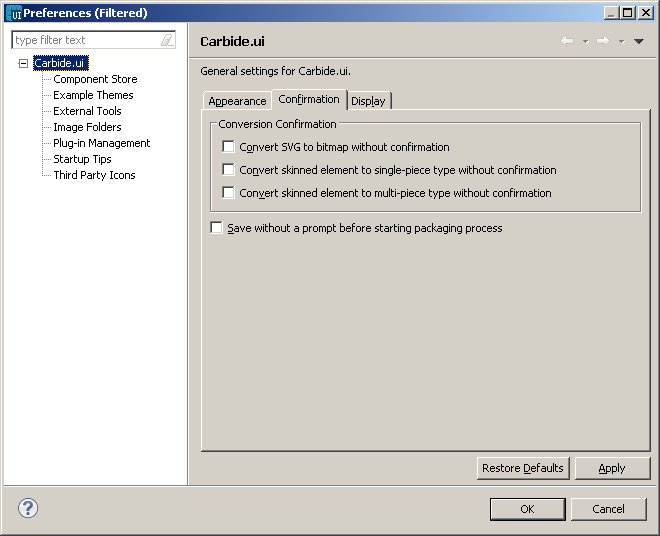

Confirmation
In the Carbide.ui pane, select the Confirmation
tab.
In the Conversion Confirmations field:
- If you do not want to be
asked for confirmation when converting
.svg images to bitmaps, check the Convert
SVG to Bitmap without confirmation
box.
- If you do not want to be
asked for confirmation when converting
elements either to single-piece or nine-piece type, check Convert skinned element to
single-piece
type without
confirmation and Convert
skinned element to multi-piece type without confirmation.
- If you want the system to
always save your theme before starting
the package process, check the Save
without prompt before starting package process
box.

Figure:
Confirmation